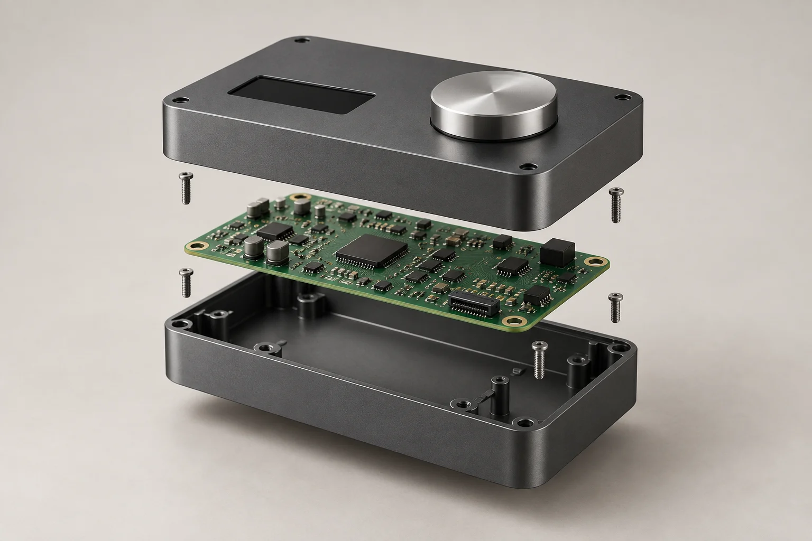
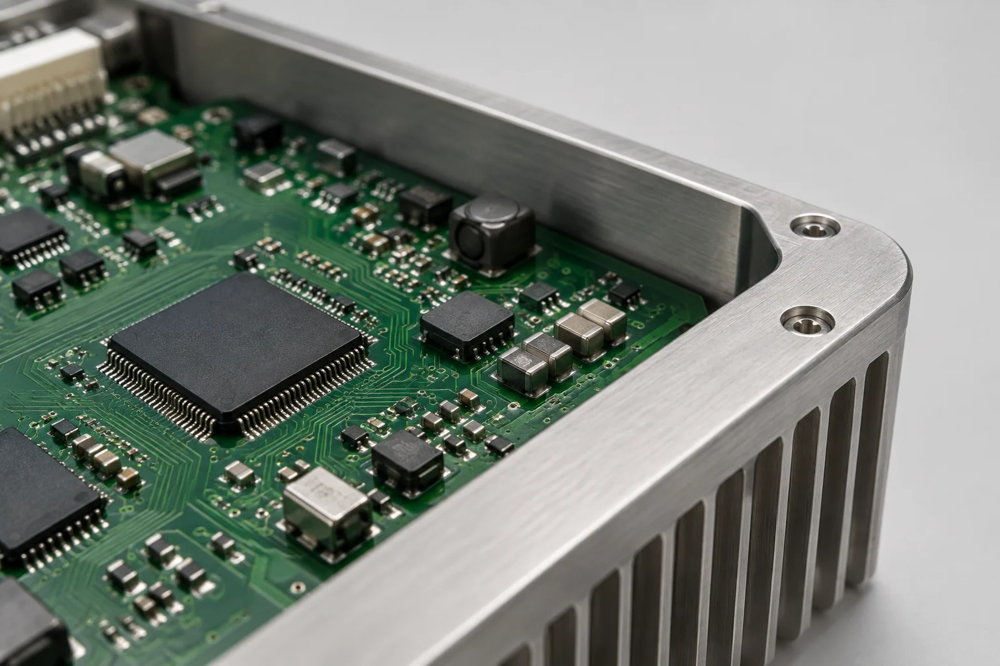

CONCEPT MODEL / FW–01
操作を、ひとつに。
制御機器組立・検査架空の製作例
ダイヤル、表示部、基板をコンパクトな筐体に。製品の構成と、組立・確認の流れを伝えるためのコンセプトモデルです。
製品と工程を見る↗Engineering ideas into form.
電気機器・制御部品のOEM生産。
仕様を考え、組み立て、確かめる。
ものづくりの一つひとつを、つなぎます。

CONCEPT MODEL — FW / 01COMPONENTS01Fields
製品の分野と、任せられる工程を分かりやすく。
この作品では、電気機器のものづくりを
3つの切り口で紹介しています。
筐体と内部部品を、一つの製品へ。構成部品の確認から、組付け・仕上げまでの流れを紹介。
組立の工程を見る↗FIELD / 02触れる、回す、確かめる。操作部と基板を組み合わせた機器を、製作例として詳しく紹介。
製作例を見る↗FIELD / 03完成の手前にある、確かめる仕事。外観・組付け・動作を、製品に合わせて確認する考え方。
品質の考え方を見る↗掲載分野・製品は、この架空ブランドの設定です。実在企業の受託範囲や実績を示すものではありません。
02 / The details make the difference.
表から見える操作部。その奥で働く基板。
それぞれの役割を理解し、組み合わせる。
製品の品質は、工程の積み重ねから生まれます。

03Project study
複雑な機能を、伝わる説明へ。
部品から完成までを、一つの機器で紹介します。
CONCEPT MODEL / FW–01
ダイヤル、表示部、基板をコンパクトな筐体に。製品の構成と、組立・確認の流れを伝えるためのコンセプトモデルです。
製品と工程を見る↗